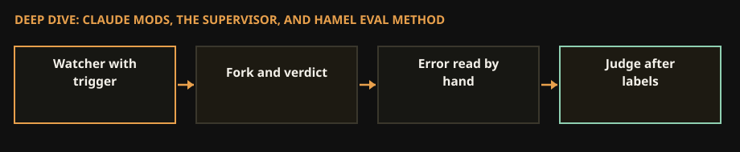

Deep Dive: Claude Mods, the Supervisor, and Hamel Eval Method
Three systems that watch the work: mods as harness middleware, a supervisor mod with measured costs, and the error analysis first eval method. Sources: Latent Space Claude Mods post read in full, Hamel Husain evals FAQ structure and method summaries. Confidence: High for mods, Medium for the eval method detail.

What a mod is
A mod is a Claude Code plugin made of TypeScript or JavaScript functions that run inside the tool. Mods act as middleware for the harness: they see events such as a prompt, a tool call, or a render, and they can observe the event, change the render, or handle the event in place of the default act. The post frame: as models absorb the machine side of the harness, the human side stays: when the agent interrupts you, what it shows, and which calls it brings to you. A built in skill teaches the tool to build mods, so a user asks in plain words and the tool writes the mod.
The six built in mods
- agents-md: loads AGENTS.md as project instructions.
- diff: takes over the diff view and draws its pane.
- plugin-authoring: the skill the tool uses to write mods.
- sec-default: guards org managed settings from user mods.
- telemetry: sends the analytics records the tool and its mods log.
- you-should-know: a side agent that posts a note over the prompt when it finds a fact you may have missed. The one mod off by default.
You Should Know: the worked case
A user asked the agent to simplify UI text. The agent trimmed copy, installed the build, and took before and after screenshots. The side agent then flagged a buried fact: the edited file plus near 45 more files held uncommitted work, so a discard of the demo edits would have cut real unfinished work. Advice: commit or stash first. The pattern is a watcher with one job: surface the material fact the main thread buried.
The Next Steps Supervisor, with its own numbers
- Trigger: the mod runs only after a turn that edited files, ran commands, or made 8 plus tool calls.
- Act: the mod forks the talk, reads the fork, and returns a verdict: concerns such as shortcuts taken, plus a next step as a button that sends the instruction as a message.
- Noise cost, from the author own data: the mod fired on 99 of 111 turns.
- Token cost: each check forks and re reads the talk, near 5 to 6k input tokens per check on a 50k token session, more on a stale cache.
- Trust cost: a mod runs with your permissions. It can read and write files, see each prompt, and spend your usage. Mods are not sandboxed, in the author words. Built in mods run even in safe mode.
- Control: a command turns the supervisor off. The deeper control is source access: the author can rewrite his trigger terms, and you can rewrite yours.
- His worth test for any watcher: did it surface a fact you would have missed, make a call easier, or let you act with no distraction.
Thariq mods: three from Anthropic staff
From the Latent Space episode notes, Medium confidence: a supervisor run as a forked sub agent, which keeps the check out of the main context and holds the prompt cache, so checks stay cheap; an assumption register that logs what the agent takes as given; and an internal model router. His stated views: prompt craft stays the core skill, a rule file may fade over time, and one file per model is a pain the vendor plans to end.
Hamel eval method: error analysis first
- Read outputs by hand first: near 30 minutes on 20 to 50 traces after each large change. One domain expert acts as the quality judge of record.
- Open code the failures: name each failure mode as it shows, group the names, refine until the groups stop changing.
- Judge in binary: pass or fail with a written critique. No 1 to 5 scales.
- Fix the errors the read found. Only then build automation.
- Build the judge prompt against the human labeled set. Validate on held out data with true positive and true negative rates. Iterate the judge like a product.
- Keep three levels apart: fast unit checks on each change, human plus model review on samples, and A/B tests late only. Guardrails block in line. Evaluators measure off line. The two never swap jobs.
- Budget claim from the source: 60 to 80 percent of build time goes to error analysis and evaluation.
Willison sub agent rules, the short form
From the one guide chapter read in full in round 3: a sub agent is a fresh copy with a fresh context and prompt, called like a tool, and the parent waits for the return. Parallel sub agents buy speed and can run cheaper models. Specialist forms: a reviewer, a test runner that hides bulk output and reports failures only, and a debugger. His warning: do not over fragment. The value is context care and token heavy work off the main thread.
Apply this to your work
Your audit lanes are supervisor mods in spirit, with one gap: no trigger terms and no cost count. Copy the supervisor design with your numbers: a watcher that fires only on turns with file edits or 8 plus tool calls, returns concerns plus one next step, and logs its fire rate and token cost per week. A watcher that fires on 9 of 10 turns gets its trigger rewritten or cut, by the author own test. Pair it with the Hamel order in your eval work: hand read 20 to 50 outputs, name the failure modes, judge in binary, and only then let a judge prompt scale the read.
Replication checklist
- Write trigger terms for your audit watcher: edits, commands, or 8 plus calls.
- Log fire rate and token cost for one week. Rewrite the trigger if the rate tops half of turns.
- Run one Hamel pass on your next lane output: 20 traces, named failure modes, binary calls.
- Keep one watcher job only: surface the buried material fact. No second job.
Prompt file: prompts/quiz-gate.md holds the review gate form that pairs with this page.
Visual map of this page
Two views of one page: a Mermaid flow for work order, rendered by the local Mermaid library in this folder, and a markmap for concept groups.
Mermaid source, for offline read
flowchart TD
A[Turn edits files or 8 plus calls] --> B[Supervisor forks]
B --> C[Verdict: concerns plus next step]
C --> D{Human acts}
E[20 to 50 traces read] --> F[Failure modes named]
F --> G[Binary labels]
G --> H[Judge prompt validated]How to read the flow diagram. Step 1: start at the first box. Step 2: follow each arrow to the next stage. Step 3: at a branch box, read both paths before a choice. Step 4: a loop arrow means work returns for one more pass vs a test.
Markmap: concepts on this page
- Deep Dive: Claude Mods, the Supervisor, and Hamel Eval Method
- Mods
- Middleware in the harness
- Six built in
- Not sandboxed
- Supervisor
- 99 of 111 turns fired
- 5 to 6k tokens per check
- Hamel
- Error analysis first
- Binary, no scales
- Guardrail vs evaluator
- Mods